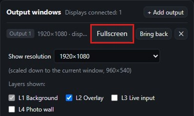
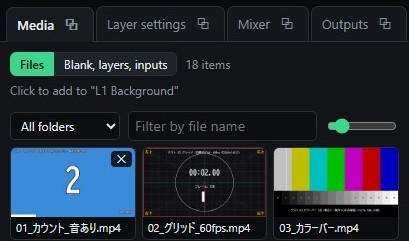
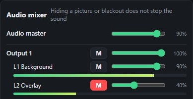

VPT39 Quick StartPreparation
Front: PrepBack: Show
About this app: A video player made for projection mapping. It is designed to be easy to use for media and interactive art with projectors, live shows and more.
VPT39 is an unofficial tool inspired by VPT (VideoProjectionTool) by HC Gilje. It is not affiliated with VPT in any way.
VPT39 is an unofficial tool inspired by VPT (VideoProjectionTool) by HC Gilje. It is not affiliated with VPT in any way.
Output windowWhat the projector shows.
It "only shows" the picture
It "only shows" the picture
⇄
Control panelA browser on the laptop.
You do everything here
You do everything here
1
Start
Double-click run.bat (VPT39 folder). The output window (small, black) and control panel (browser) open.
First time on a PC: be online (parts install automatically). For the firewall prompt, choose "Allow".
2
Show it on the projector
- ⊞Win+P → "Extend" (not "Duplicate")
- Which is the projector? Identify numbers each display
- Drag the small black output window to the projector display
- Control panel, "Outputs" tab: Fullscreen (or F / double-click on the output window)
- Check the screen. Keep the control panel on the laptop

2 or more: + Add output (can also be joined into one wide picture; full guide, ch. 4).
3
Arrange videos (clips)

- Put videos in the media folder (in seconds they show in the "Media" tab), or drag and drop from Explorer onto "Media"
- Drag media onto a layer row (click: add to end of selected layer)
- Same number (column) for each song (switch all with ① on the back). No picture for a song: "+ Add blank"
- Cameras, windows, Spout (Processing, etc.): in "Blank, layers, inputs"
4
Fit the screen shape (mapping)
- Turn on Edit mapping (E) in the top bar (a Test pattern grid helps)
- Select a layer row. In "Layer settings", drag the four corners of the mapping diagram to fit the screen
- Fine moves: pick a corner (or All) under the diagram, then ←→↑↓ = 1 px (Shift: 10 px)
- From a phone: Phone in the top bar → scan the QR code (ch. 9)
When done, always press E (editing off) and turn off the test pattern, or the frame and grid show to the audience.
 ↑Output while editing. The yellow dots are the corners
↑Output while editing. The yellow dots are the corners
5
Check the sound

- "Mixer" tab, top down: Audio master → output → layer
- M = mute (red = muted)
- Green bars are only a guide. Listen to the speakers
- No sound? PC volume → output device (speakers) → mixer M, faders
Settings are saved automatically (run.bat brings back the same state on the same displays). Before the show, do one full rehearsal on the same PC and projector.
VPT39 Quick Start (front)Details: manual\en\index.html (screen-by-screen manual)